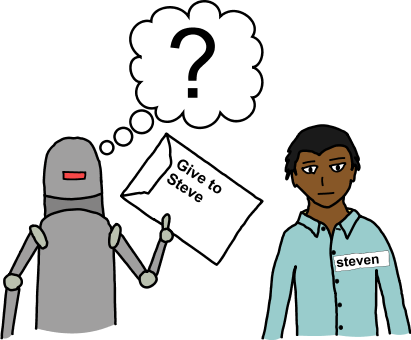

Intro to Programming
with Javascript
Created by Ben Glassman / github.com/benglass
Welcome
Tell us about yourself.
- Who are you?
- What has been your favorite part of the course so far?
- Tell us about your first pet
What is Programming?
Writing step-by-step instructions for a computer.
We call these instructions code.
Javascript Code Example
Step 1: Ask the user what their age is
var age = prompt('How old are you?'); Step 2: If they are not 21, recommend disney.com
if (age < 21) {
alert("Perhaps you should try http://www.disney.com");
}
Why do we write programs?
- To perform repetitive tasks more efficiently
- To perform complex tasks consistently and accurately
- To transform and manipulate data
Computers interpret instructions literally
Your Mom is a Clown
Your Dad is a Dinosaur
Computers are like a person who only understands grammatically correct sentences. This can be frustrating.
You: I took a picture of my mom and dad, a clown and a dinosaur.
Computer: Your mom is a clown. Your dad is a dinosaur.
Syntax: Rules for Talking to Computers
Every language has rules for how your instructions should be constructed so that a computer can understand them.
When your instructions dont follow these rules, its a Syntax Error
Can you think of some syntax rules for HTML or CSS?
HTML Syntax
A tag is an abbreviation surrounded by less than and greater than symbols.
Valid Syntax
<p>Hi!</p>Syntax Error
<pHi!</p>CSS Syntax
A rule is a property followed by a colon followed by a value followed by a semi colon.
Valid Syntax
color: blue;Syntax Error
color = blue;Interpreted vs. Compiled
Interpreted
The computer can interpret and execute the code directly.
Examples: Javascript, PHP, Python, Perl and Ruby.
Compiled
First, the code is compiled into an executable program. Second, this program can be executed by the computer.
Examples: C, C#, Java
Interpreted vs. Compiled Advantages
Interpreted
- Faster to write code
- Cross-platform
Compiled
- Faster to run code
REPL
Interpreted languages generally include tool called REPLs that allow you to enter a line of code and immediately see the result.
- Read: Read a line of code
- Evaluate: Interpret the line of code
- Print: Show the result
- Loop: Go back to step 1 and wait
Try out a Javascript REPL
Every browser has a built in Javascript interpreters. Chrome has a built-in REPL called the console. Open it by going to Menu > Tools > Javascript Console or hitting CTRL-SHIFT-J
You can also expirement with REPLs for other languages at repl.it
REPL/Console Excercises
- Add 2 numbers together
- Type your name
- Type your name surrounded by quotes
- Type: alert('Hi!')
- Type: print('Hi!')
- Pick python or ruby on repl.it and try these excercises. Whats similar? Whats different?
What is Javascript used for?
- Front-end Web Development: Web browsers have a built in javascript interpreter. Javascript is the only language embedded in all browsers.
- Back-end Web Programming: nodejs allows you to run javascript on the server, where you would traditionally use other languages like C#, Python, PHP, Java or Ruby.
- ???: With the introduction of nodejs in 2009, javascript because usable as a general purpose scripting language.
Using Javascript in the Browser
Lets use javascript inside an HTML page. Make a folder called javascript. Inside it make a new html page called index.html and add the following code:
<!DOCTYPE html>
<html>
<head>
<title>Test Page</title>
</head>
<body>
<p>This is my awesome JavaScript code.</p>
<script>
alert('Hello World!');
</script>
</body>
</html>
Script Tags
You can mix JavaScript and HTML. The script tag tells your browser the code inside is javascript that should be run.
<script>
alert('Hello World!');
</script>
Javascript Files
Just like CSS, you can place JavaScript in its own file and attach it to an HTML page.
Getting Results Onto Your Screen
Popup Window
alert('Hello World!');
Send it to the Console
console.log(5 + 2);
Add to HTML
document.write('Hello!!!'); // Replaces all other HTML
document.body.innerHTML = 'Hello!'; // Replace html inside <body>
document.body.innerHTML += 'Hello!'; // Add html inside <body>
Exercises
Open up index.html in your editor and try the follow exercises.
- Use alert to show a popup message
- Use console.log to send data to the console. Open the console to view it.
- Use console.log to send data to the console. Open the console to view it.
Expressions
An expression is a piece of code that can be evaluated to a value. Each line in following example is an expression.
var taskName = "Grocery shopping";
5;
"bob" + " " + "hoskins"
4 * 2Anything you type into the REPL/console which does not result in an error is a valid expression.
Values
A value is a single piece of data.
- The name of a task: "Grocery Shopping"
- Whether or not the task is completed: true or false
- The date and time a task was completed: 2015-02-27 12:30:00
- The order of the task in a list: 1 or 2
- What other examples can you think of?
Types of Values (Data Types)
Programming languages categorize values into types.
- String: "Grocery Shopping"
- Boolean: true or false
- Date: 2015-02-27 12:30:00
- Integer: 1 or 2
- What other examples can you think of?
- Float: 3.14159 or 9.99
Strings
A string is what programming languages call text. In javascript we surround strings with single or double quotes. There is no difference between single and double quotes.
What can we learn about strings from the examples below?
'Grocery Shopping'
'Reread "To Kill a Mockinbird"'
"Give the dog a bath"
"Pick up dad's gift"
Numbers (Integers and Floats)
An integer is a whole number (no decimal places). A float is a number with decimal places. Both are written without quotes in javascript.
10
5
3.14159
9.99
-50
Booleans
A boolean is a yes/no value. It is written as either true or false, without any quotes.
true
false
Variables
Variables are named containers that can hold values.

Creating Variables
You create a variable by using the var keyword.
You decide on the name.
var taskName = "Grocery Shopping";
var taskIsComplete = false;
var taskPriority = 1;Creating Variables
Variable names should only contain letters, numbers and certain special characters ($, _).
Naming your variables clearly is crucial to writing code that is easy to understand. Some names are not allowed for variables because they are used by the language, such as if and else. These are called reserved words and are different for each programming language.
Changing Variable Values
As the term variable suggests, you can change a variable's value after creating it by assigning a value using the equals sign. The code below creates a variable called taskName with the value "Grocery Shopping" and then changes the value to "Dog grooming".
var taskName = "Grocery Shopping";
taskName = "Dog grooming";Referencing Variables in Code
Once you have created a variable you can reference it in code just by using the name.
var age = 21;
var ageInMonths = age * 12; // 21 * 12Variable Exercises
- Create a variable called taskName with the value of the name of a task that needs to be completed
- Create a variable called incompleteTasks with a value of 4
- Create a variable called completeTasks with a value of 3
- Create a variable called totalTasks with a value of incompleteTasks + completeTasks
- Create a variable with a name of your choice and do not assigan it a value. What value is it given?
- Create a variable with the name if and assign it any value. What happened?
Operators
Operators are special symbols that we can use to compare, modify or combine values.
Arithmetic Operators
You are already familiar with the concept of operators from math. Arithmetic operators allow you to perform math on numeric values.
| Description | Example | Result | |
|---|---|---|---|
| + | Adds 2 values | 5 + 5 | 10 |
| - | Subtracts one value from another | 5 - 3 | 2 |
| * | Multiply one value by another | 4 * 2 | 8 |
| / | Divide one value by another | 16 / 4 | 4 |
| % | Divide one value by another | 5 % 4 | 1 |
String Operators
The + operator behaves differently when used with string values. It will combine them together into a new string.
| Example | Result |
|---|---|
| "Margaret" + "Hamilton" | "MargaretHamilton" |
| "Margaret" + " " + "Hamilton" | "Margaret Hamilton" |
Number Exercises
- Add 2 numbers
- Multiply 2 numbers together
- Subtract 1 numbers from another
- Divide one number by another
- Multiply .5 by 2. What did we learn?
- Divide 5 by 3. What did you learn?
- Find out the remainder of dividing one number by another
- Divide a positive number by 0
- Divide 0 number by 0
- Cause an error by entering invalid code, what error did you see and why?
String Exercises
- Combine 2 strings together
- Combine 2 strings together with a space in the middle
- Combine a string and a number. What did you learn?
- Combine a number in quotes and a number not in quotes. what did you learn?
- Try using one of the operators than + with 2 strings, what happens?
- Create a string that includes single quotes
- Create a string that includes double quotes
- Divide a number in quotes by a number not in quotes, what did we learn? Try other operators (*, %)
- Cause an error, what error did you see and why?
Comparison Operators
Comparison operators allow you to compare 2 values together. Using a comparison operator always results in a boolean value of true or false.
| Description | Example | Result | |
|---|---|---|---|
| === | Equals | 5 === 5 | true |
| !== | Not Equals | 5 !== 5 | false |
| > | Greater Than | 5 > 2 | true |
| ≥ | Greater Than or Equal To | 5 ≥ 5 | true |
| < | Less Than | 5 < 2 | false |
| ≤ | Less Than or Equal To | 5 ≤ 5 | true |
Common Mistake
Confusing === with =
It is a very common programming mistake to use === instead of = or vice versa and can lead to hard to spot bugs.
Comparison Operator Exercises
Try comparing the following values. Try to guess what the result will be (true or false). What did we learn? Try your own combinations.
| Value 1 | Operator | Value 2 | Result |
|---|---|---|---|
| 5 | === | "5" | |
| "a" | !== | "A" | |
| "a" | < | "z" | |
| "b" | > | "a" | |
| "b" | > | "A" | |
| -100 | < | 30 |
Logical Operators
Logical operators allow you to combine multiple comparisons.

Logical Operators: && (AND)
The && (AND) operator will result in a value of true if both of the comparisons are true. You can use parentheses to group the comparison.
| Expression | Result |
|---|---|
| true && true | true |
| false && false | false |
| true && false | false |
| (5 > 3) && (5 > 1) | true |
| (5 > 3) && (5 > 7) | false |
| ("bob" !== "doug") && ("jenny" !== "janet") | true |
Logical Operators: || (OR)
The || (OR) operator will result in a value of true if either of the comparisons are true. You can use parentheses to group the comparison.
| Expression | Result |
|---|---|
| true || true | true |
| false || false | false |
| true || false | true |
| (5 > 3) || (5 > 1) | true |
| (5 > 3) || (5 > 7) | true |
| ("bob" !== "doug") || ("jenny" !== "janet") | true |
Logical Operators: ! (NOT)
The ! (NOT) operator will inverse the value of the expression. If the expression is true then it will now be false and vice versa. You can use parentheses to group the comparison.
| Expression | Result |
|---|---|
| !true | false |
| !false | true |
| !(5 > 3) | false |
| !(5 > 7) | true |
| !("jenny" !== "janet") | false |
Logical Operator Exercises
- Write an expression that evaluates to true using &&. Do the same with false.
- Write an expression that evaluates to true using ||. Do the same with false.
- Write an expression that evaluates to true using both && as well as ||. Do the same with false.
- Create a variable called taskIsComplete with a value of false. Use the ! operator to write an expression that tells if the task is NOT complete (should return true).
- Create an expression using the ! operator that sets taskIsComplete the opposite of its current value.
Vertical Slides
Slides can be nested inside of each other.
Use the Space key to navigate through all slides.
Basement Level 1
Nested slides are useful for adding additional detail underneath a high level horizontal slide.
Basement Level 2
That's it, time to go back up.
Slides
Not a coder? Not a problem. There's a fully-featured visual editor for authoring these, try it out at http://slides.com.
Point of View
Press ESC to enter the slide overview.
Hold down alt and click on any element to zoom in on it using zoom.js. Alt + click anywhere to zoom back out.
Touch Optimized
Presentations look great on touch devices, like mobile phones and tablets. Simply swipe through your slides.
Fragments
Hit the next arrow...
... to step through ...
... a fragmented slide.
Fragment Styles
There's different types of fragments, like:
grow
shrink
roll-in
fade-out
current-visible
highlight-red
highlight-blue
Transition Styles
You can select from different transitions, like:
None -
Fade -
Slide -
Convex -
Concave -
Zoom
Themes
reveal.js comes with a few themes built in:
Black (default) -
White -
League -
Sky -
Beige -
Simple
Serif -
Night -
Moon -
Solarized
Slide Backgrounds
Set data-background="#dddddd" on a slide to change the background color. All CSS color formats are supported.
Image Backgrounds
<section data-background="image.png">Tiled Backgrounds
<section data-background="image.png" data-background-repeat="repeat" data-background-size="100px">Video Backgrounds
<section data-background-video="video.mp4,video.webm">Background Transitions
Different background transitions are available via the backgroundTransition option. This one's called "zoom".
Reveal.configure({ backgroundTransition: 'zoom' })Background Transitions
You can override background transitions per-slide.
<section data-background-transition="zoom">Pretty Code
function linkify( selector ) {
if( supports3DTransforms ) {
var nodes = document.querySelectorAll( selector );
for( var i = 0, len = nodes.length; i < len; i++ ) {
var node = nodes[i];
if( !node.className ) {
node.className += ' roll';
}
}
}
}
Code syntax highlighting courtesy of highlight.js.
Marvelous List
- No order here
- Or here
- Or here
- Or here
Fantastic Ordered List
- One is smaller than...
- Two is smaller than...
- Three!
Tabular Tables
| Item | Value | Quantity |
|---|---|---|
| Apples | $1 | 7 |
| Lemonade | $2 | 18 |
| Bread | $3 | 2 |
Clever Quotes
These guys come in two forms, inline:
“The nice thing about standards is that there are so many to choose from”
and block:
“For years there has been a theory that millions of monkeys typing at random on millions of typewriters would reproduce the entire works of Shakespeare. The Internet has proven this theory to be untrue.”
Intergalactic Interconnections
You can link between slides internally, like this.
Speaker View
There's a speaker view. It includes a timer, preview of the upcoming slide as well as your speaker notes.
Press the S key to try it out.
Global State
Set data-state="something" on a slide and "something"
will be added as a class to the document element when the slide is open. This lets you
apply broader style changes, like switching the page background.
State Events
Additionally custom events can be triggered on a per slide basis by binding to the data-state name.
Reveal.addEventListener( 'customevent', function() {
console.log( '"customevent" has fired' );
} );
Take a Moment
Press B or . on your keyboard to pause the presentation. This is helpful when you're on stage and want to take distracting slides off the screen.
Much more
- Right-to-left support
- Extensive JavaScript API
- Auto-progression
- Parallax backgrounds
- Custom keyboard bindings